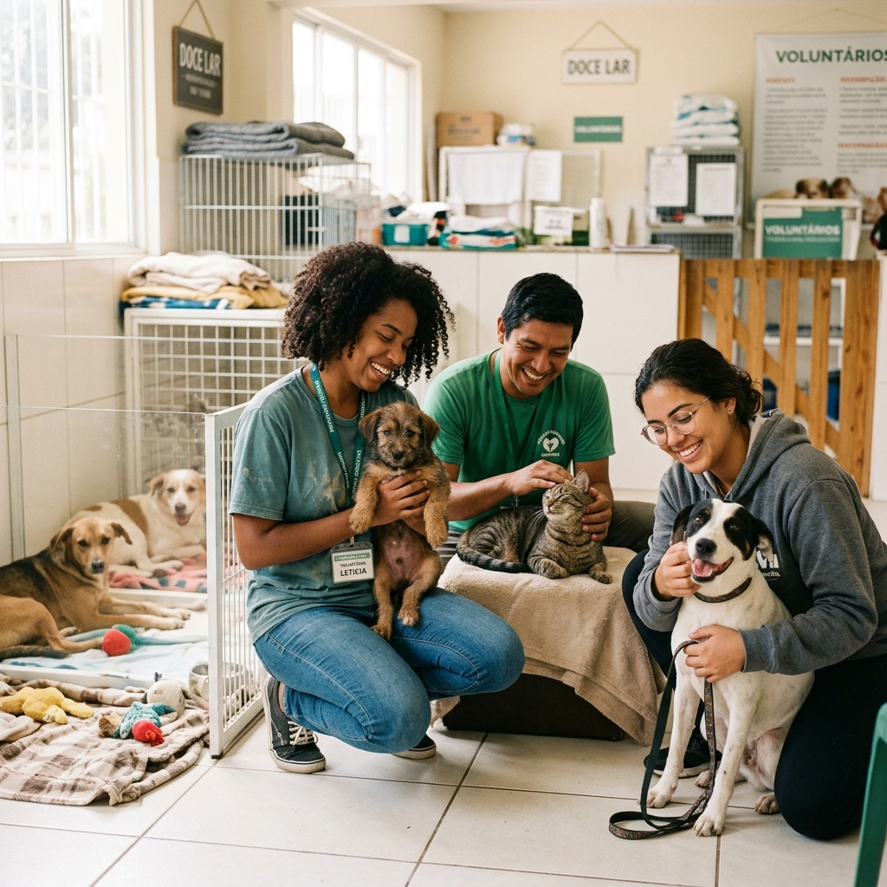
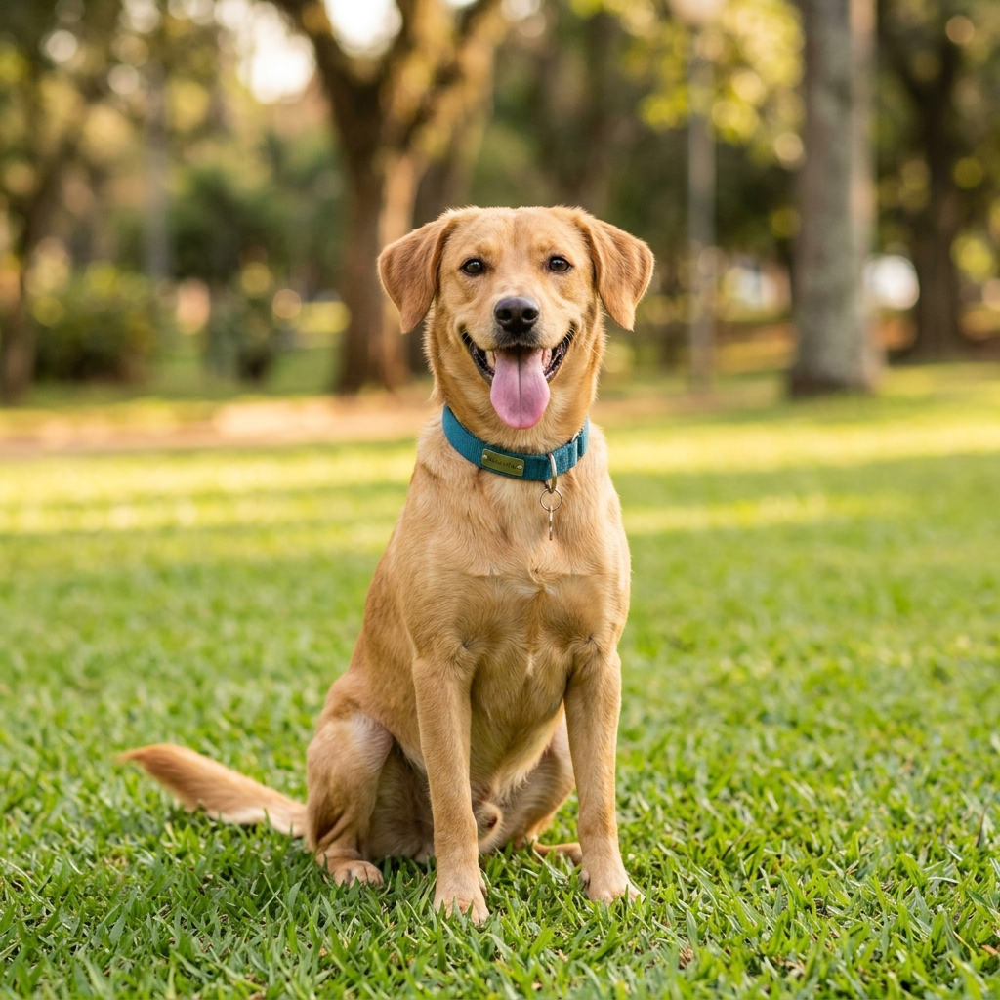
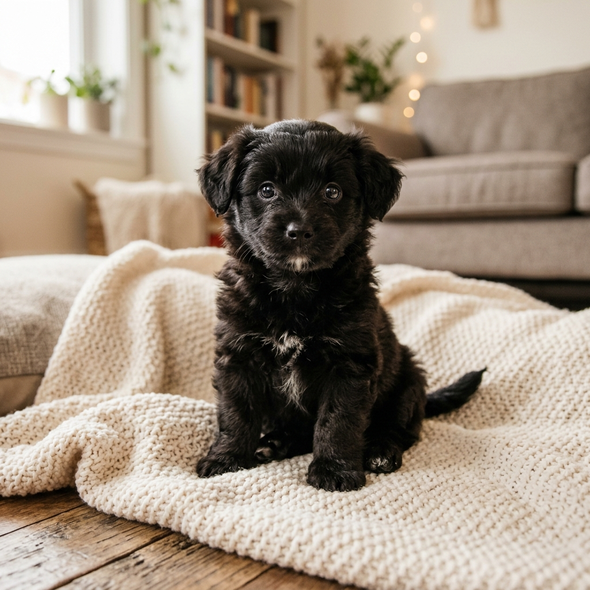
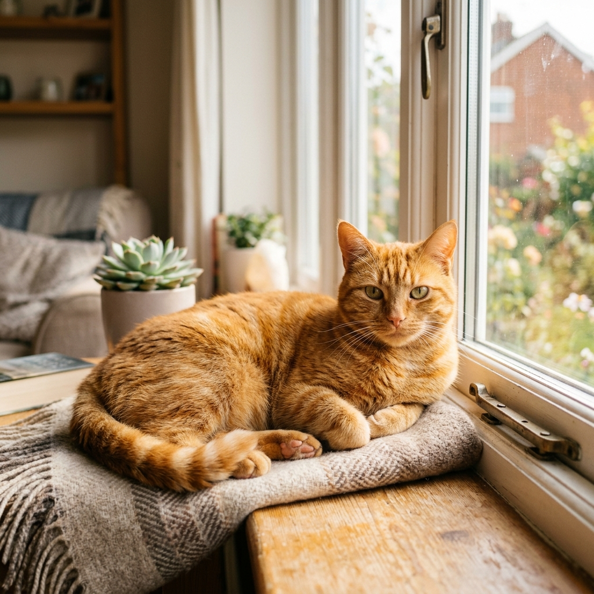
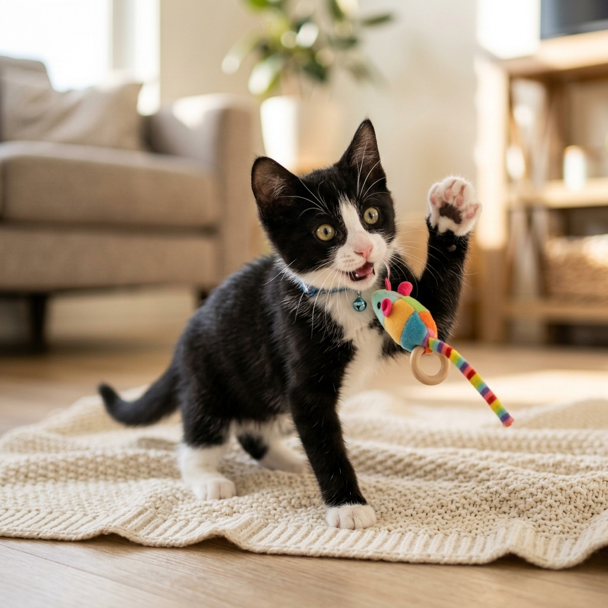

Resgate
Atendemos chamados de animais em situação de maus-tratos, abandono e atropelamento em Bandeirantes e região.
Resgatamos, tratamos e encontramos famílias para animais em situação de vulnerabilidade na região de Bandeirantes e Norte Pioneiro do Paraná.
O Projeto Bicho é uma associação de proteção animal fundada em Bandeirantes, no Norte Pioneiro do Paraná. Somos uma equipe 100% voluntária, movida pelo amor e pela urgência de cuidar de quem não pode pedir ajuda.
Não temos abrigo próprio. Funcionamos por meio de uma rede de lares temporários, onde cada animal resgatado é acolhido com carinho até encontrar uma família definitiva. Realizamos resgates, tratamentos veterinários, campanhas de castração e adoções responsáveis.
Saiba mais
Atuamos em diversas frentes para proteger e dar dignidade a animais em situação de vulnerabilidade na nossa região.
Atendemos chamados de animais em situação de maus-tratos, abandono e atropelamento em Bandeirantes e região.
Garantimos atendimento médico completo: consultas, cirurgias, vacinas e recuperação para cada animal resgatado.
Nossa rede de famílias voluntárias acolhe animais até encontrarem um lar definitivo, oferecendo amor e segurança.
Conduzimos um processo criterioso de adoção com entrevista e acompanhamento para garantir o bem-estar do animal.
Promovemos campanhas de castração em parceria com CastraPet Paraná e Castra+Paraná para controle populacional responsável.
Conheça alguns dos nossos peludos que estão prontos para encontrar uma família cheia de amor.




Existem muitas formas de fazer a diferença na vida de um animal. Escolha a que mais combina com você.
Junte-se à nossa equipe e ajude no resgate, transporte, cuidado diário e eventos de adoção.
Acolha um animal até ele encontrar sua família. Você oferece amor, nós cuidamos do resto.
Dê um lar definitivo a um dos nossos peludos e transforme duas vidas de uma vez.
Está precisando de ajuda com um animal? Quer ser voluntário ou tem dúvidas? Entre em contato conosco e vamos conversar. Respondemos o mais rápido possível.